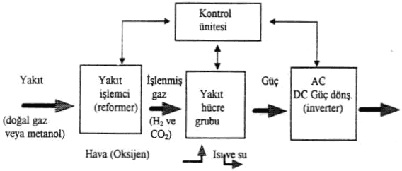
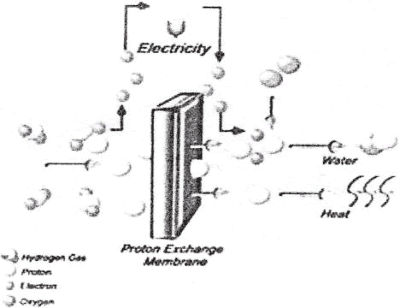

|
Mehmet
Emre BAÞ
Bitirme Tezi, 2005
Uludað Üniv. Makine Müh. Böl., Bursa
1.
GÝRÝÞ:
Ýnsanlýðýn
ateþi bulup kullanmaya baþladýðý günden beri en büyük problemlerinden
biri enerji sorunu olmuþtur. Ateþin kullanýlmasýyla beraber
odun, kömür gibi katý yakýtlar enerji kaynaðý olarak kullanýlmaya
baþlanmýþtýr. Daha sonralarý ise bunlara petrol ve bir enerji
türü olan elektrik eklenmiþtir.
Son
tüketiciye enerji "yakýt" ve/veya "elektrik".
Ýkincil enerji olan elektriðin çeþitli kullaným avantajlarýnýn
bulunmasýna karþýn, teknoloji yalnýzca elektriðe baðlý olarak
deðil, yakýtý da gerektiren biçimde geliþmiþtir. Bunun nedeni,
genel enerji tüketiminin %60'ýnýn ýsý biçiminde gerçekleþmesidir.
Birincil enerji kaynaklarýnýn, fiziksel durum deðiþimi içeren
biçimde dönüþtürülmesi ile elde edilen ikincil enerjilere,
"enerji taþýyýcý" denir. Elektrik 20. yüzyýla damgasýný
vuran bir enerji taþýyýcýsýdýr. Hidrojen ise 21. yüzyýla damgasýný
vuracak bir diðer enerji taþýyýcýsýdýr.
Endüstri
devrimi ile 1750 yýlýndan bu yana, teknik yeniliklere dayalý
olarak dünya genelinde ekonominin geliþmesi, peþ peþe beþ
ayrý dalgalanma biçiminde sürmüþtür. 1750-1825 yýllarý arasýndaki
birinci dalgalanmanýn baþat enerji kaynaðý kömürüdür. 1825-1860
arasýndaki ikincil dalgalanmada, ekonomiye ivme kazandýran
elektrik olmuþtur. 1860-1910 yýllarý arasýndaki üçüncü dalgalanmada
elektrik etkisini sürdürmüþ, ama yeni kaynak olarak petrol
ortaya çýkmýþtýr. 1910-1970 arasýndaki dördüncü dalgalanmada
ekonomiyi büyüten yeni enerji kaynaðý nükleer enerjidir.
Þimdi
1970'lerde baþlayan, 21. yüzyýlýn neresinde biteceði henüz
bilinmeyen yeni bir dalgalanma içindeyiz. Bu yeni dalgalanmayý
etkileyen enerji türü hidrojendir. Hidrojen, kullaným verimi
yüksek bir yakýttýr. Çevre dostudur. Teknolojik geliþim, çevre
etkisini de içeren efektif maliyetinin diðer yakýtlardan düþük
olmasýný saðlar duruma gelmiþtir.
Hidrojenin
kullanýlmasýný gerektiren baþlýca iki neden olup, biri fosil
yakýtlarýn yanma emisyonu karbon dioksitin artmasýndan kaynaklanan,
global ýsýnmaya neden olan çevre sorunu, diðeri petrol ve
doðalgaz gibi akýþkan hidrokarbonlarýn bilinen üretilebilir
rezerv ömürlerinin insan ömrü ile kýyaslanabilecek boyuta
düþmüþ olmasýdýr.
Bu noktada yakýt pillerinin ne denli önemli olduðu ortaya
çýkmaktadýr. Çünkü dünyanýn giderek daha fazla kirlendiði
bilinmektedir ve bunun sonucunda da çeþitli sorunlarla karþý
karþýya kalýnmaktadýr. Eðer dünya üzerinde fosil yakýt tüketimi
bu hýzla devam edecek olursa çok yakýn bir zamanda dünya aþýrý
ýsýnma tehlikesi ile karþý karþýya kalacaktýr. Bu yüzden fosil
yakýt tüketiminin azaltýlmasý ve daha düþük emisyon deðerlerine
ulaþýlmasý gerekmektedir. Buda ancak yakýt pillerinin daha
yaygýn olarak kullanýlmasýyla gerçekleþecektir.
2.
YAKIT PÝLLERÝNÝN TARÝHSEL GELÝÞÝMÝ:
Yakýt
pilleri, verimli, ekonomik, sessiz ve çevre ile uyumlu enerji
üretiminde kullanýlan, gelecek kuþaklarda çok daha yaygýn
olarak kullanýlacaðý tahmin edilen önemli yaklaþýmlardan biridir.
Yakýt gazlarýndaki kimyasal enerji, düþük enerjili, minimum
hareketli parçalar içeren ve hava kirliliðine sebep olmayan
elektro kimyasal bir proseste elektrik enerjisine dönüþtürülür.
Yakýt
pilleri teknolojisinin bulunuþunun 1839 yýlýnda Sir William
Robert Grove tarafýnda olduðu kabul edilmektedir. Onun geliþtirdiði
yakýt hücresi sistemi, elektrolit olarak seyreltik sülfürik
asit, oksitleyici etken olarak oksijen ve yakýt olarak da
hidrojen kullanmaktaydý. Yakýt pilleri yakýn zamana kadar
sadece laboratuarlarda ve uzay yolculuðu gibi belli alanlarda
kullanýlmaktaydý. Fakat uzay gemilerinde kullanýlmaya baþlamasý
ile birlikte 1960'tan itibaren çok hýzlý olarak geliþmeye
baþlamýþ ve fosil yakýtlarýn kirleticiliðine çözüm olarak
son yýllarda kara taþýt araçlarýnda içten yanmalý motorlar
yerine enerji saðlayýcý olarak kullanýlmaya baþlanmýþtýr.
Özellikle
sanayinin ve araþtýrmalarýn baþladýðý yýllar olan 1900'lere
doðru geldiðimizde fosil yakýtlarýn kimyasal enerjisini direkt
olarak elektrik enerjisine çevirme isteði ve kömürün oksidasyonu
ile ilgili yapýlmýþ pek çok araþtýrma ile karþýlaþmaktayýz.
Hatta bunlar arasýnda 1960'larda uzay araçlarýnda kullanýlan
H2 - O2 uzay güç hücrelerine benzeyen çok benzeyen hidrojen
yakýt hücrelerine rastlanmaktadýr. Bu çalýþmalarýn baþarýya
ulaþamamasýnýn genel sebebi malzemelerden dolayý oluþan problemlerdir.
1920'lerden
sonra ise gaz-difüzyon elektrotunun düþük sýcaklýkta gerçekleþen
iþlemler için önemli bir anahtar olduðu fark edilmiþtir. A.
Schmid, platin katalizörlü,gözenekli karbon-hidrojen elektrotlarý
silindirik þekilde yapan ilk araþtýrmacý olmuþtur. Bunun sonucunda
benzer þekilde dizayn edilmiþ havalý elektrotlara göre daha
pratik yakýt pilleri yapýlabilmiþtir.
Bütün
bu geliþmelere raðmen, meydana gelen Ýkinci Dünya Savaþý direkt
enerji çevrimi konusunda yürütülmekte olan araþtýrmalarýn
çoðunun durdurulmasýna yol açmýþtýr. Bu araþtýrmalarýn durdurulmasý
sonucu, zaten geliþmiþ olan ve güç ihtiyacýný karþýlamaya
hazýr olan içten yanmalý motorlar ulaþým sektörünün lideri
olmuþ, havada jet motorlarý ve güç ünitelerinde de gaz türbinleri
bu yolu izleyerek ön plana çýkmýþlardýr.
Bu
geliþmeler birlikte Birleþik Krallýkta F. T. Bacon, gözenekli
metal elektrotlu alkali yakýt hücresi sistemleri üzerinde
çalýþmýþ ve savaþtan sonra bu çalýþmalarý yayýnlamýþtýr. F.
T. Bacon'un geliþtirdiði yakýt hücresi sistemi, 1968'de insanlarýn
Ay'a uçmasýný saðlayan NASA yakýt pilleri sistemlerinin ilk
prototipi olma özelliði kazanmýþtýr. Yakýt pilleri alanýndaki
araþtýrmalar tekrar popüler olmuþtur. Yapýlan araþtýrmalar
sonucunda düþük katalizör yüklemeli gözenekli karbon kullanýmýnýn
hidrojen-hava yakýt pillerinde düþük maliyetli bir çözüm olduðu
kanýtlanmýþtýr, bu da yakýt hücreleriyle çalýþan elektrikli
otomobillere olan ilgiyi çok fazla arttýrmýþ ve birçok prototipin
üretilmesini saðlamýþtýr. 1970'te K. Kordesch, hidrojen yakýt
pilleri ile çalýþan 4 kiþilik bir otomobil üretmiþtir. Bu
aracý üç yýl boyunca þehir trafiðinde kullanmayý baþarmýþtýr.
1970'lerin
ortasýnda þaþýrtýcý bir deðiþim olmuþ, o ana kadar uzay araþtýrmalarýnda
en üst geliþmiþlik düzeyine ulaþan alkali yakýt hücresi sistemleri
yerlerini sabit güç ünitelerine daha uygun olduðu düþünülen
fosforik asit yakýt hücresi sistemlerine býrakmýþlardýr. Bu
geliþmelere paralel olarak hidrokarbonlarýn tercih edilen
yakýt kaynaklarý olarak yeniden yapýlandýrýlmasý ve geliþtirilmesi
gerekmiþtir. Bu büyük ölçekli güç ünitesi üretimine olan ilgi
ABD'de ilginin biraz düþtüðü dönemlerde özellikle Japonya'da
fark edilebilmektedir.
Yüksek
sýcaklýklý ünitelerin genelde çok iyi verimleri olmasýndan
dolayý 1980'lerde erimiþ karbonatlý yakýt pilleri sistemlerinin
ve 1990'larda da katý oksit yakýt pilleri sistemlerinin geliþtirilmesine
aðýrlýk verilmiþtir. Ama ne yazýk ki yüksek sýcaklýklý yakýt
pilleri sistemlerinin ömürleri ile ilgili sorunlar giderilememiþtir.
Teknolojideki
belki de en önemli geliþme 1990'larda gerçekleþmiþtir. Membranlý
yakýt pilleri sistemleri geliþimdeki en önemli nokta olmuþtur.
Aslýnda membranlý yakýt pilleri sistemleri 1960'larda da biliniyordu,
fakat uzay çalýþmalarýnda alkali sistemler kadar baþarýlý
olmadýklarý için önemleri bu süre zarfýnda alkali sistemlerin
gerisinde kalmýþtýr. Yeni membran çeþitleri ve katalizör araþtýrmalarý
sonucu yüksek güç yoðunluklarýna ulaþabilmiþtir. Geriye bir
tek sorun kalmýþtýr, o da membranlar ile soðutma ve atýk su
dolaþým sistemlerinin yüksek maliyeti sorununun çözümlenmesidir.
Günümüzde
de büyük maliyetler gerektiren teknolojik buluþlar gizli bir
þekilde yürütülmekte, daha ekonomik, daha ucuz ve daha az
yer kaplayan yakýt pilleri araþtýrmalarýna devam edilmektedir.
Önümüzdeki yirmi yýllýk zaman dilimi içinde birçok alanda
yakýt pillerini görmek mümkün olacaktýr.
3.
YAKIT PÝLÝNÝN ÖNEMÝ:
Yeni
bir bin yýla girerken yakýt pilinin dünya çapýnda araçlarýn
kullanýmýnda inanýlmaz þekilde artacaðý ve enerji için dünya
çapýnda raðbet göreceði tahmin ediliyor. Enerji stoklarýmýzý
korumak, çevremizi korumak ve yaþam kalitesini düzeltmek için
dünyanýn enerji ihtiyaçlarý için teknolojiden yeterince yararlanmak
gereklidir. Arabalar, evler ve enerji santralleri için yeterli
çok yönlü bir teknolojiye ihtiyaç vardýr. Çevremize verilen
zararlarý tersine döndürmeye yardým edebilecek yeterince temiz
bir teknoloji gereklidir. O teknoloji yakýt pilleridir.
Yakýt hücreleri, konvansiyonel güç üretim sistemlerine göre
aþaðýdaki üstünlüklere sahiptir.
- Çevresel
kirlilik oraný düþüktür.
- Enerji
üretim verimi oldukça yüksektir.
- Farklý
yakýtlarla çalýþabilir. (Doðal gaz, LPG, Metanol ve Nafta)
- Egzoz
ýsýsý yeniden kazanýlabilir.
- Modüler
yapýdadýr.
- Montaj
süresi kýsadýr.
- Çok
yüksek miktarda soðutma suyu (deniz suyu gibi) gerektirmez.
- Güvenilir
bir sistemdir.
- Ýþletim
karakteristiði uygulamada kolaylýklar saðlar.
- Geleceðe
yönelik olarak geliþme potansiyeli oldukça yüksektir.
- Katý
atýk ve gürültü problemi yoktur.

4. YAKIT PÝLLERÝ VE TÜRLERÝ:
4.1
YAKIT PÝLLERÝ:
Bir
yakýt pili, bir elektrolit ve bu elektroliti sandviç þeklinde
saran iki elektrottan oluþmaktadýr. Oksijen bir elektrottan,
hidrojen de diðer elektrottan geçerek elektrik, su ve ýsý
üretir.
Prensip olarak, yakýt pilleri bir pil gibi çalýþýr. Pilden
farklý olarak, yakýt pilleri bitmez yada þarj edilmesine gerek
yoktur. Yakýtla beslendiði sürece elektrik ve ýsý formunda
enerji üretir.
Hidrojen, yakýt pillerinin anoduna beslenir. Oksijen (veya
hava) yakýt pillerine katottan girer. Bir katalizör yardýmýyla,
hidrojen atomu, katoda farklý yollar izleyerek gidecek olan
bir proton ve bir elektrona ayrýlýr. Proton elektrolit içerisinden
geçer. Elektronlar, katoda dönüp hidrojen ve oksijen ile birleþerek
su molekülü oluþturmadan önce bir elektrik akýmý oluþtururlar.
Þekil 3.1'de bir yakýt pillinin çalýþma þekli görülmektedir.
"Yakýt dönüþtürücü" içeren bir yakýt pili sistemi
hidrojeni herhangi bir hidrokarbondan-doðalgazdan, metanolden
ve hatta benzinden elde edebilir.

Þekil 3.1 Bir yakýt pili çalýþma prensibinin þematik
gösterimi
|